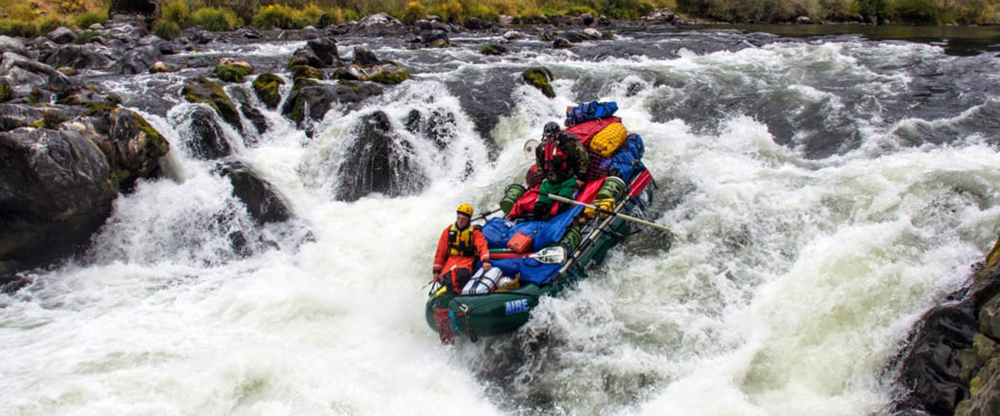

Running Rivers
Rogue River, Oregon
This river has a total of 215 miles that it crossesand is great for white water rafting. It has rugged and majestic scenery and you will get to experience of a lifetime!
North Umpqua River, Oregon
The North Umpqua although considered a tributary to the Umpqua River is 106 miles long and follows a path of steep canyons with cascading Doglas-firs following the way down. Some of the best rafting in the state!